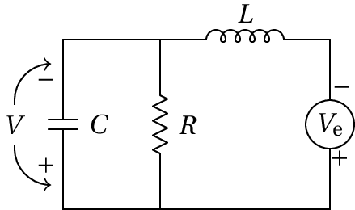
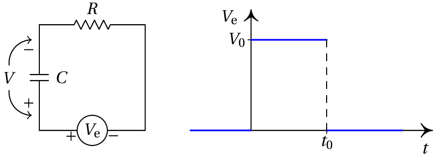
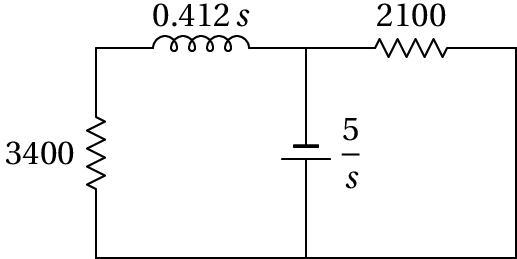

10. Processamento de sinais
Problema 3
Uma resistência de 3 kΩ e um condensador de 5 nF estão ligados em série a uma fonte com tensão , entre e , e nos outros instantes ( medido em µs e em V). Calcule a corrente no circuito em .
Convém primeiro definir o sistema de unidades a usar:
Como tal, pode usar-se kΩ para a resistência, nF para a capacidade e a frequência estará em MHz. A impedância equivalente da resistência em série com o condensador é:
A unidade para o tempo será a inversa da unidade da frequência, ou seja, µs e não é necessário alterar a expressão da tensão. A tensão da fonte, em função do tempo, pode escrever-se da forma seguinte:
Ou seja, é a sobreposição de uma tensão mais outra tensão deslocada 4 unidades em . Calculam-se as correntes e produzidas por cada uma dessas tensões:
(%i3) i1: ratsimp(laplace (V1,t,s)/z);
(%o3)
(%i4) I1: ilt(i1,s,t);
(%o4)
(%i5) V2: 6 + 2*t$
(%i6) i2: ratsimp(laplace(V2,t,s)/z);
(%o6)
(%i7) I2: ilt(i2,s,t);
(%o7)
A corrente (em mA, em µs) é mais deslocada 4 unidades em :
Problema 6
No circuito da figura: (a) Calcule a impedância total, em função de . (b) Calcule a transformada da corrente que passa pelo indutor. (c) Encontre a função de transferência, se a tensão de saída for medida no condensador. (d) Determine a equação diferencial para a tensão de saída.
(a) O condensador e a resistência estão em paralelo e esse sistema está em série com o indutor; como tal, a impedância total é:
(%o8)
(b) Representando a transformada de Laplace da tensão de entrada com a variável ve, a transformada da corrente total (no indutor) é:
(%o9)
(c) A tensão no condensador é a mesma do que no sistema do condensador em paralelo com a resistência; como tal, a transformada da tensão no condensador é:
(%o10)
e a função de transferência é:
(%o11)
(d) O resultado %o10 escreve-se com polinómios, em vez de função racional:
A equação diferencial do sistema é a transformada inversa dessa equação, que por simples inspeção é:
Problema 7
O circuito na figura é denominado filtro passa-baixo. Escreva a equação que relaciona o sinal de saída com o sinal de entrada. Encontre a função de transferência do sistema e determine o sinal de saída quando o sinal de entrada é o indicado no lado direito da figura. Explique porque se designa este circuito de filtro passa-baixo.
A impedância total é a soma das impedâncias da resistência e do condensador e a transformada da tensão de saída é igual à corrente vezes a impedância do condensador:
Ou seja, a equação diferencial do filtro é:
E a função de transferência é:
Denomina-se passa-baixo, porque é máxima a baixas frequências ( ) e nula a altas frequências ( ).
A expressão do sinal de entrada representado no gráfico, em é:
ou seja, a sobreposição linear de um sinal constante, , mais o mesmo sinal, multiplicado por e deslocado no tempo em . Como tal, a resposta do circuito será a resposta ao sinal constante , menos a mesma resposta deslocada no tempo em .
A resposta ao sinal constante encontra-se multiplicando a sua transformada de Laplace pela função de transferência e calculando a transformada inversa de Laplace:
(%o12)
(%i13) U: ilt (v, s, t);
(%o13)
O sinal de saída é então:
Problema 8
No circuito representado no diagrama, a fonte foi ligada no instante , quando não havia corrente no indutor. Determine a expressão da voltagem na resistência de 3.4 kΩ, em função do tempo . Com a expressão obtida, confirme as respostas dadas para o problema 11 no capítulo 9.

No domínio da frequência , o circuito é o seguinte (unidades SI):
O indutor e a resistência de 3.4 kΩ estão em série, podendo ser substituidos por um único dispositivo com impedância . A transformada da corrente nesse dispositivo será:
(%o14)
E a transformada da voltagem na resistência de 3.4 kΩ é:
A voltagem na resistência, em função do tempo, é a transformada inversa de Laplace:
(%o16)
A voltagem na resistência de 3.4 kΩ, em função do tempo é:
Finalmente, os resultados do problema 11 do capítulo 9 confirmam-se da forma seguinte:
(%i18) subst(t=0,V);
(%o18) 0
(%i19) float(subst(t=0,dV));
(%o19) 4.126e+4
(%i20) limit(V,t,inf);
(%o20) 5